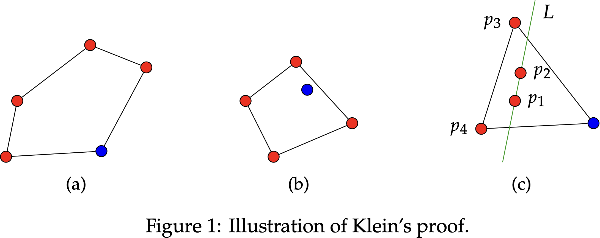
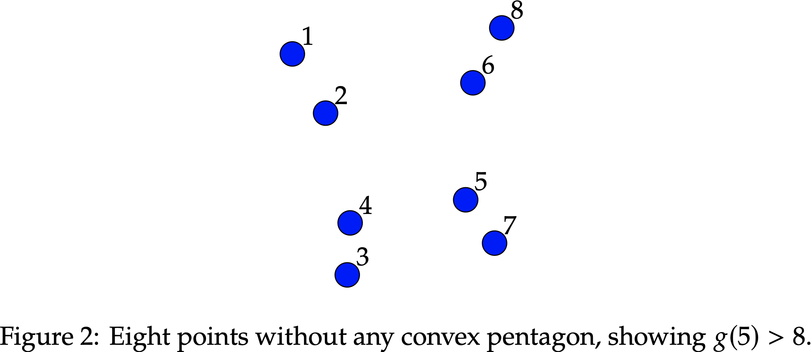
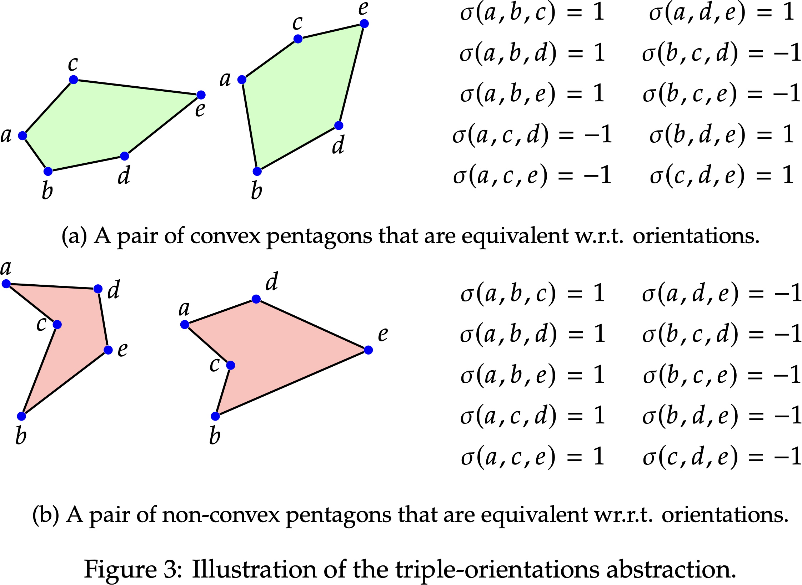
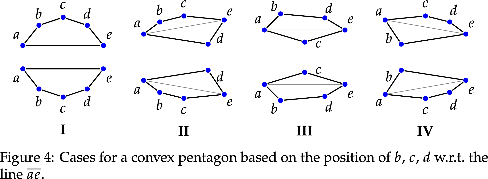
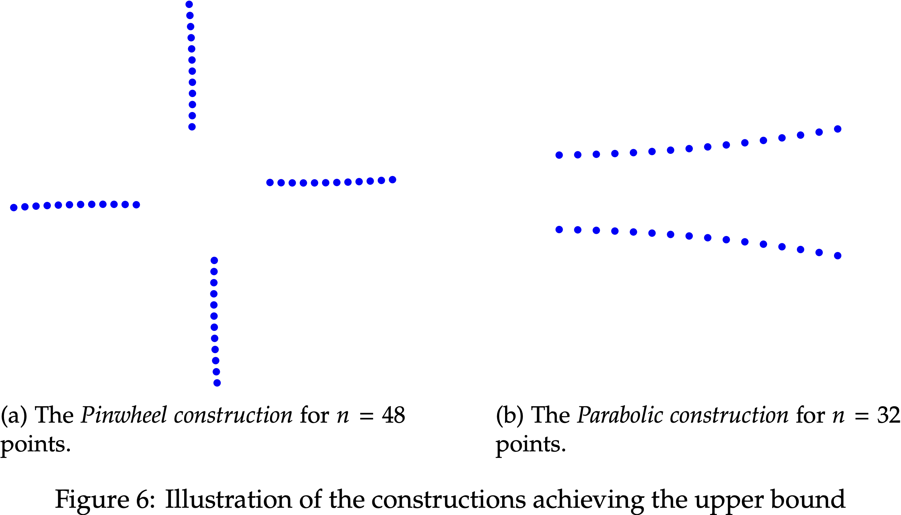
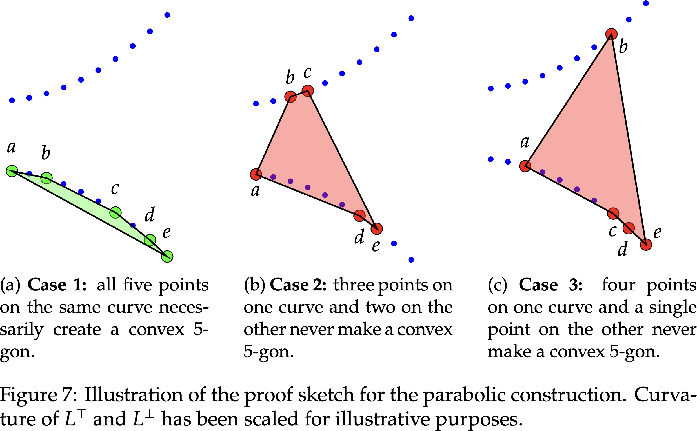

Computer Assisted Mathematics: A Case Study in Discrete Geometry
The elephant in the room: AI & Mathematics
In the last couple of years a pressing question has started to permeate the mathematical community: how will mathematicians’ jobs coexist harmoniously with AI as it gets progressively better at mathematics? “A.I. Is Coming for Mathematics, Too” was the title chosen by the NY Times in their dedicated article of 2024, “AI Will Become Mathematicians’ Co-Pilot” said the Scientific American, and the American Mathematical Society published “Questions Artificial Intelligence Raises for the Mathematics Profession”.
This time it does not seem to be a matter of sensationalistic journalism; some of the most respected mathematicians in the world are joining the conversation, with voices of concern, excitement, and a wide spectrum of positions in between. Perhaps the most aligned with the spirit of this research is Jordan Ellenberg, number theorist who co-authored FunSearch with DeepMind and stated (see Castekvecchi, 2023):
What’s most exciting to me is modeling new modes of human–machine collaboration, I don’t look to use these as a replacement for human mathematicians, but as a force multiplier.
The goal of this post is to show through a concrete case study how SAT solvers, a relatively old AI technology, can also allow for human-machine collaboration in mathematics. Interestingly, the problem we study takes place in two-dimensional geometry, an a priori continuous domain, which makes the participation of SAT solvers somewhat surprising. While this is not the first usage of SAT in discrete geometry, its main novelty (besides the technical results) is in documenting how SAT solvers and other automated reasoning tools can assist mathematical research by revealing patterns and elliciting conjectures. At the end of the post I discuss verification—as opposed to recent language-based forms of AI, standard automated reasoning tools such as (Max)SAT solvers can provide proofs for their answers, which can be crucial for mathematics.
The Happy Ending was just the beginning
In 1933, Esther Klein presented the following problem to George Szekeres and Paul Erdős:
Problem 1. If five points lie on a plane so that no three points form a straight line, prove that four of the points will form a convex quadrilateral.
Klein’s solution is simple and elegant; almost entirely exposed in Figure 1. Note first that there are only three possible cases for the size of the convex hull of five points without collinearities. In case (a), where the convex hull includes all five points, any four of them make a convex quadrilateral. In case (b), where the convex hull has only four points, those four are the sought-after quadrilateral. In case (c), where the convex hull is a triangle, we consider the line \(L\) passing through the two points inside the triangle, which we call \(p_1\) and \(p_2\), and then observe that the pigeonhole principle implies that one side of \(L\) must contain two of the three points in the convex hull, which we call \(p_3\) and \(p_4\); we are done, since the points \(p_1, p_2, p_3, p_4\) must form a convex quadrilateral.
Klein’s problem kickstarted geometric Ramsey theory, and it was soon afterwards extended by Szekeres and Erdős into the following theorem:
Erdős-Szekeres Theorem. For any positive integer \(k\), there is an integer \(g(k)\) such that any collection of \(g(k)\) points contains either 3 collinear points or a convex \(k\)-gon.
As a second consequence of the problem, George Szekeres and Esther Klein married, which led Erdős to jokingly name Klein’s problem as the Happy Ending problem.
Not only has Klein’s problem had a long-lasting impact in discrete geometry, her solution already contains an important insight: properties of finite point sets such as convexity do not rely on the specific coordinates of the points, but rather on their relative position and orientations, which are enough to determine the structure of e.g., convex hulls. This insight, as will become clear later in this post, is what opens the door to logical computation in a domain which may a priori seem continuous.
The problem: minimizing convex pentagons
Klein’s proof shows \(g(4) \leq 5\), and it is then easy to see that indeed \(g(4) = 5\). It is not too hard to see that \(g(5) = 9\) (see Figure 2), but it took until 2006 for \(g(6) = 17\) to be proven computationally by Lindsay Peters and George Szekeres. 1 No other values of \(g(k)\) are known, although Erdős and Szekeres conjectured \(g(k) = 2^{k-2} + 1\) for all \(k \geq 3\).
In 1973, a more quantitative variant was posed by Erdős and Guy:
More generally, one can ask for the least number of convex \(k\)-gons determined by \(n\) points in the plane [without three on a line].
Indeed, let us denote by \(\mu_k(n)\) the minimum number of convex \(k\)-gons on a placement of \(n\) points in the plane without any three on a common line. While \(\mu_4(n)\) has been heavily studied, its close cousin \(\mu_5(n)\) has received significantly less attention, and our goal was to remedy this situation. The following table summarizes our progress in computing \(\mu_5(n)\), previously known up to \(n = 11\), and now solved up to \(n = 16\).
| # of points (\(n\)) | ≤8 | 9 | 10 | 11 | 12 | 13 | 14 | 15 | 16 |
|---|---|---|---|---|---|---|---|---|---|
| Previously [2] | 0 | 1 | 2 | 7 | [12, 13] | [20, 34] | [40, 62] | [60, 113] | — |
| Our work | 0 | 1 | 2 | 7 | 12 | 27 | 42 | 77 | 112 |
A boolean representation of the problem
As suggested by Klein’s proof for \(g(4)\), it is possible to reason about properties like convexity based on combinatorial relationships between points instead of their concrete coordinates. Our goal in this section is to see how these relationships between points, and their impact on properties like convexity, can be encoded in propositional logic. The most successful combinatorial abstraction in geometric Ramsey theory is that of triple orientations,2 which intuitively consists of considering which oriented triples of points define a curve that turns counterclockwise, and which ones turn clockwise. Concretely, given points \(p, q, r\), their triple-orientation is defined as
\[ \sigma(p, q, r) = \text{sign} \det \begin{pmatrix} p_x & q_x & r_x \\ p_y & q_y & r_y \\ 1 & 1 & 1 \end{pmatrix} = \begin{cases} -1 & \text{if } p, q, r \text{ are oriented clockwise,} \\ 0 & \text{if } p, q, r \text{ are collinear}, \\ 1 & \text{if } p, q, r \text{ are oriented counterclockwise}. \end{cases} \]
Since the problem disallows collinear points, we can ignore the case \(\sigma(p, q, r) = 0 \), and thus note that each set of points \((p_1, \ldots, p_n)\) induces a valuation of propositional variables \(o_{i, j, k}\) through \(o_{i, j, k} \iff \sigma(p_i, p_j, p_k) = 1 \). We will use these orientation variables, for \(1 \leq i < j < k \leq n\), to encode the convex-pentagon minimization condition, assuming without loss of generality that the points are labeled from left to right. The following figure illustrates how convexity is captured by triple orientations, and is invariant to the “details” of the coordinates (i.e., invariant under rotations, reflections, and infinitesimal perturbations)
More precisely, to encode whether a given \(5\)-tuple of points is convex or not with our orientation variables we can use an idea of Szekeres and Peters, 2006, who identified a nice separation of the cases leading to convex pentagons just in terms of the triple orientations.
Every possible convex pentagon falls into exactly one of these cases, and each of these cases can be described succinctly as follows:
- Case I: \(\sigma(a,b,c) =- \sigma(b,c,d) = -\sigma(c,d,e),\)
- Case II: \( \sigma(a, b, c) =-\sigma(b, c, e) = \sigma(a,d,e),\)
- Case III: \( \sigma(a,b,d) = -\sigma(b, d, e) = \sigma(a, c, e),\)
- Case IV: \( \sigma(a, b, e) = -\sigma(a, c, d) = -\sigma(c, d, e).\)
We can thus easily encode these cases through the boolean orientation variables. For example, the fact that a tuple \((a,b,c,d,e)\) does not fall into the first case can be expressed by the formula
\[ F^I_{a,b,c,d,e} := (o_{a,b,c} \rightarrow (o_{b,c,d} \vee o_{c,d,e})) \wedge (\neg {o_{a,b,c}} \rightarrow (\neg o_{b,c,d} \vee \neg o_{c,d,e})), \] and similarly, we can construct formulas \(F^{II}_{a,b,c,d,e}, F^{III}_{a,b,c,d,e}, F^{IV}_{a,b,c,d,e} \) for the remaining cases.
Then, it is easy to write each of these formulas in conjunctive normal form (CNF), the format supported by most solvers. The conjunction of all these, over all 5-tuples of points indexed by \([n]\), results in a formula \(\Phi_n\) such that each convex pentagon on a set of \(n\) points in general position would induce exactly one falsified clause in \(\Phi_n\). Moreover, some additional symmetry-breaking constraints can be added to the \(\Phi_n\) in order to reduce the search space and make the local search more efficient, but we will not discuss them here in order to simplify our exposition. A detailed description, including formally verified proofs of correctness, can be found in Subercaseaux et al., 2024.
Local search
At this point, we can use a local search SAT solver (e.g., Tassat (Chowdhury, Codel, Heule, 2023)) to try to minimize the number of falsified clauses in the formula \(\Phi_n\), and thus, indirectly, the number of convex pentagons among \(n\) points. We need however to declare two caveats:
- Local search solvers can get stuck at local minima, so the number of falsified clauses they obtain is only an upper bound of the true answer.
- Unfortunately, the upper bound on the number of falsified clauses does not provide an upper bound on the minimum number of convex pentagons, since assignments to the orientation variables might not be realizable by any set of actual points in the plane. In fact, the realizability problem of deciding whether an assignment to the orientation variables matches the orientations of some set of points in the plane is \(\exists \mathbb{R} \)-complete, so much harder than SAT itself.
Despite these worst-case warnings, by running local search we obtained the following results:
| \(n\) | Min. false cls | time [s] |
|---|---|---|
| 9 | 1 | 0.00 |
| 10 | 2 | 0.00 |
| 11 | 7 | 0.00 |
| 12 | 12 | 0.00 |
| 13 | 27 | 0.01 |
| 14 | 42 | 0.01 |
| 15 | 77 | 0.01 |
| 16 | 112 | 0.02 |
| 17 | 182 | 0.02 |
| 18 | 252 | 2.03 |
| 19 | 378 | 0.94 |
| \(n\) | Min. false cls | time [s] |
|---|---|---|
| 20 | 504 | 174.11 |
| 21 | 714 | 3.34 |
| 22 | 924 | 43.92 |
| 23 | 1254 | 11.64 |
| 24 | 1584 | 472.33 |
| 25 | 2079 | 63.48 |
| 26 | 2574 | 5268.1 |
| 27 | 3289 | 1555.5 |
| 28 | 4004 | 1791.9 |
| 29 | 5005 | 467.36 |
| 30 | 6007 | 18244 |
Can you notice any patterns?
For a first observation, let’s see the sequence of differences between consecutive values:
\( 1, 5, 5, 15, 15, 25, 25, 70, 70,
126, 126, …\) These is hardly a coincidence, as we will show later. But more importantly, can we see a function that describes this sequence? Wolfram Mathematica certainly can! If we interpolate the first ten even values by a degree 5-polynomial (a natural guess since these are a fraction of the 5-tuples of points), the answer is immediate: \( 2\binom{N/2}{5}\). This formula matches all the even terms except the last one, which is off by one. Considering the runtime and the fact that it’s also the first time the consecutive differences differ (\(6007 - 5005 \neq 5005 -4004\)), the simplest interpretation is that local search caps out around \(n = 30\), but the answer most likely is indeed \(6006\).
Playing with the odd values quickly suggests the following conjecture for all values of \(n\):
\[ \mu_5(n) = \binom{\lfloor{n/2}\rfloor}{5} + \binom{\lceil{n/2}\rceil}{5}. \]
Note that this conjecture directly implies the observation about consecutive differences: \[ \mu_5(2n) - \mu_5(2n-1) = 2\binom{n}{5} - \left(\binom{n}{5} + \binom{n-1}{5}\right) = \binom{n}{5} - \binom{n-1}{5}, \] and similarly \[ \mu_5(2n-1) - \mu_5(2n-2) = \left(\binom{n}{5} + \binom{n-1}{5}\right) - 2\binom{n-1}{5} = \binom{n-2}{5} - \binom{n-2}{4}. \]
Constructions
As we mentioned, however, we have no a-priori guarantee that the local search solutions are actually realizable by points in the plane. In fact, the fraction of orientation assignments that can be realized goes to zero as \(n\) grows, at a rate of \(2^{-n}\) (Knuth, 1992).
Once again, not discouraged by the worse-case analysis, implementing a realizability program yields insightful results. 3 Indeed, by realizing different assignments for \( n = 12\), we obtained two classes of realizations:
Naturally, we gave John Mackey, the mathematician in the group, the task of proposing general constrictions of these forms. We called the left one a pinwheel construction, and the right one a parabolic construction.
Interestingly, they both give the conjectured answer in general, thus making it a proper upper bound.
Theorem 1: For every \(n \geq 9\), we have \(\mu_5(n) \leq \binom{\lfloor{n/2}\rfloor}{5} + \binom{\lceil{n/2}\rceil}{5}\).
Seeing this in the pinwheel construction requires a bit of work, but in the parabolic construction it is rather easy to see. It suffices to show, as the following figure illustrates, that the subsets of 5 points that are convex are precisely those that are contained in a single parabola.
Naturally, even the parabolic construction requires some care in the design of the parabolas. A concrete construction that works is: \[ p^\top_i = \left(i, 2 + \frac{i^2}{n^2}\right), \forall i \in \left[\left\lfloor\frac{n}{2}\right\rfloor \right] \quad \text{and} \quad p^\bot_i = \left(i, -2 - \frac{i^2}{n^2}\right), \forall i \in \left[\left\lceil\frac{n}{2}\right\rceil \right].\ \]
Verification
Since local search solvers cannot prove lower bounds, we used a MaxSAT formulation to certify the values \(\mu_5(n)\) for \(n \leq 15\). Concretely, the solver that performed best was MaxCDCL (Li et al., 2021), and we used a Cube and Conquer (Heule, Kullman, Biere, 2018) approach to parallelize the computation. Then, the VeritasPBLib (Gocht et al., 2022) framework allowed us to obtain a reproducible certificate. The details are purposefully omitted here, but the important part is that SAT and MaxSAT solvers can emit checkable proofs of their results, and moreover, some of the proof-checkers have been formally verified in theorem provers such as Coq, Lean, or CakeML. See e.g., Tan, Heule, and Myreen, 2021.
Let’s make it 16.
We can actually leverage the insight of the consecutive differences from earlier on to certify the value of \(\mu_5(16)\) without having to run a MaxSAT solver.
First, consider the following supersaturation lemma.
Lemma 2: For every \(n > 5\), we have \(\mu_5(n) \geq \frac{n}{n-5} \cdot \mu_5(n-1)\).
Proof. Consider a set of \(n\) points \(S\) that achieves the optimal bound, and for each point \(p \in S\) let \(f(p)\) be the number of convex pentagons in \(S\) that contain \(p\). As pentagons consist of exactly five points, we have \(\sum_{p \in S} f(p) = 5 \cdot \mu_5(n)\). Now, notice that for every \(p\) there must be at least \(\mu_5(n-1)\) convex pentagons that do not contain \(p\), and thus we have \( \mu_5(n) - f(p) \geq \mu_5(n-1)\). Summing this equation over \(p\) gives us \[ \sum_{p \in S} (\mu_5(n) - f(p)) \geq n \cdot \mu_5(n-1), \] and as \(\sum_{p \in S} (\mu_5(n) - f(p)) = n \cdot \mu_5(n) - 5 \cdot \mu_5(n)\), we have the desired inequality.
Now, combining this with Theorem 1, we can formalize our previous observation:
Theorem 2: If for some \(n > 5\) it holds that \(\mu_5(2n-1) = \binom{n}{5} + \binom{n-1}{5}\), then we have \(\mu_5(2n) = 2\binom{n}{5}\).
Proof. We have \(\mu_5(2n) \leq 2\binom{n}{5}\) by Theorem 1, and thus to see that equality is achieved we use Lemma 2 to obtain \[ \mu_5(2n) \geq \frac{2n}{2n-5} \mu_5(2n-1) = \frac{2n}{2n-5} \left(\binom{n}{5} + \binom{n-1}{5}\right), \] and since \(\binom{n}{5} = \frac{n}{n-5} \binom{n-1}{5}\), we have \[ \frac{2n}{2n-5} \left(\binom{n}{5} + \frac{n-5}{n} \binom{n}{5}\right) = \left(\frac{2n}{2n-5} + \frac{2(n-5)}{2n-5}\right)\binom{n}{5} = 2\binom{n}{5}. \]
Thus, from the fact \(\mu_5(15) = 77\), we conclude that \(\mu_5(16) = 112\).
Conclusions
We have seen, through a concrete case study, how SAT solvers, coupled with other computational tools, can assist mathematical research at different stages. At the moment, the mathematical community is still trying to understand how to best leverage AI for mathematics, and it is important to document how existing tools can also be used in this context. While the current conversation is centered around language models, I strongly believe that classical AI tools are still vastly underutilized by the mathematical community, and I plan to keep working on tools, algorithms, and logical encodings that might make them more popular among mathematicians.
This blog is based on joint work with John Mackey, Marijn J. H. Heule and Ruben Martins, which was accepted at CICM’2024, and is publicly available at https://arxiv.org/abs/2311.03645. Naturally, this blog post tells a linearized version of the story; our work went through many back-and-forths, and sometimes intuition preceded computation.
Bibliography
-
George Szekeres and Lindsay Peters. Computer solution to the 17-point Erdős-Szekeres problem. The ANZIAM Journal, 48(2):151–164, 2006.
-
Stefan Felsner and Helmut Weil. Sweeps, arrangements and signotopes. Discrete Applied Mathematics, 109(1):67–94, April 2001.
-
Donald E. Knuth. Axioms and Hulls. In Donald E. Knuth, editor, Axioms and Hulls, Lecture Notes in Computer Science, pages 1–98. Springer, Berlin, Heidelberg, 1992.
-
Md Solimul Chowdhury, Cayden R. Codel, and Marijn J. H. Heule. 2024. TaSSAT: Transfer and Share SAT. In Tools and Algorithms for the Construction and Analysis of Systems: 30th International Conference, TACAS 2024, Held as Part of the European Joint Conferences on Theory and Practice of Software, ETAPS 2024, Luxembourg City, Luxembourg, April 6–11, 2024, Proceedings, Part I. Springer-Verlag, Berlin, Heidelberg, 34–42. https://doi.org/10.1007/978-3-031-57246-3_3
-
Chu-Min Li, Zhenxing Xu, Jordi Coll, Felip Manyà, Djamal Habet, and Kun He. Combining Clause Learning and Branch and Bound for MaxSAT. In 27th International Conference on Principles and Practice of Constraint Programming (CP 2021). Leibniz International Proceedings in Informatics (LIPIcs), Volume 210, pp. 38:1-38:18, Schloss Dagstuhl – Leibniz-Zentrum für Informatik (2021) https://doi.org/10.4230/LIPIcs.CP.2021.38
-
Stephan Gocht, Ruben Martins, Jakob Nordström, and Andy Oertel. Certified CNF Translations for Pseudo-Boolean Solving. In 25th International Conference on Theory and Applications of Satisfiability Testing (SAT 2022). Leibniz International Proceedings in Informatics (LIPIcs), Volume 236, pp. 16:1-16:25, Schloss Dagstuhl – Leibniz-Zentrum für Informatik (2022) https://doi.org/10.4230/LIPIcs.SAT.2022.16
-
Bernardo Subercaseaux, Wojciech Nawrocki, James Gallicchio, Cayden Codel, Mario Carneiro, and Marijn J. H. Heule. Formal Verification of the Empty Hexagon Number. In 15th International Conference on Interactive Theorem Proving (ITP 2024). Leibniz International Proceedings in Informatics (LIPIcs), Volume 309, pp. 35:1-35:19, Schloss Dagstuhl – Leibniz-Zentrum für Informatik (2024) https://doi.org/10.4230/LIPIcs.ITP.2024.35
-
Castelvecchi, D.: DeepMind AI outdoes human mathematicians on unsolved problem. Nature 625(7993), 12–13 (Dec 2023).
-
Heule, M.J.H., Kullmann, O., Biere, A. (2018). Cube-and-Conquer for Satisfiability. In: Hamadi, Y., Sais, L. (eds) Handbook of Parallel Constraint Reasoning. Springer, Cham. https://doi.org/10.1007/978-3-319-63516-3_2
-
Tan, Y.K., Heule, M.J.H., Myreen, M.O. (2021). cake_lpr: Verified Propagation Redundancy Checking in CakeML. In: Groote, J.F., Larsen, K.G. (eds) Tools and Algorithms for the Construction and Analysis of Systems. TACAS 2021. Lecture Notes in Computer Science(), vol 12652. Springer, Cham. https://doi.org/10.1007/978-3-030-72013-1_12
-
Erdős, P., Guy, R.K.: Crossing number problems. The American Mathematical Monthly 80(1), 52–58 (1973).
George Szekeres died in 2005 (one hour apart from Esther Klein!), and thus to the best of my knowledge, Peters completed the paper using some previous ideas of Szekeres, which makes unclear whether the Hungarian mathematician got to see the result \(g(6) = 17\) before his passing.
Also known as signotopes [2], Knuth’s counterclockwise relation (CC-systems) [3], or signatures [1].
I have developed since a much more efficient version of this program, leveraging parallelism and a much better algorithm. It can be found in https://github.com/bsubercaseaux/point_realizer.